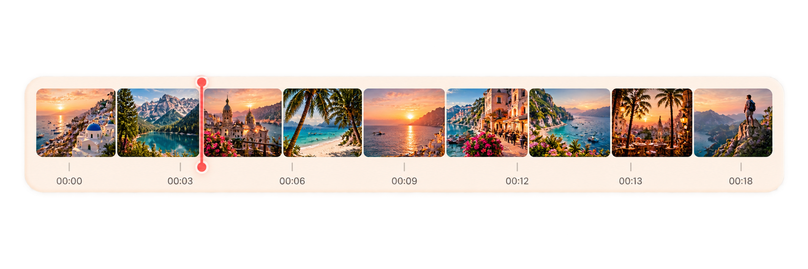
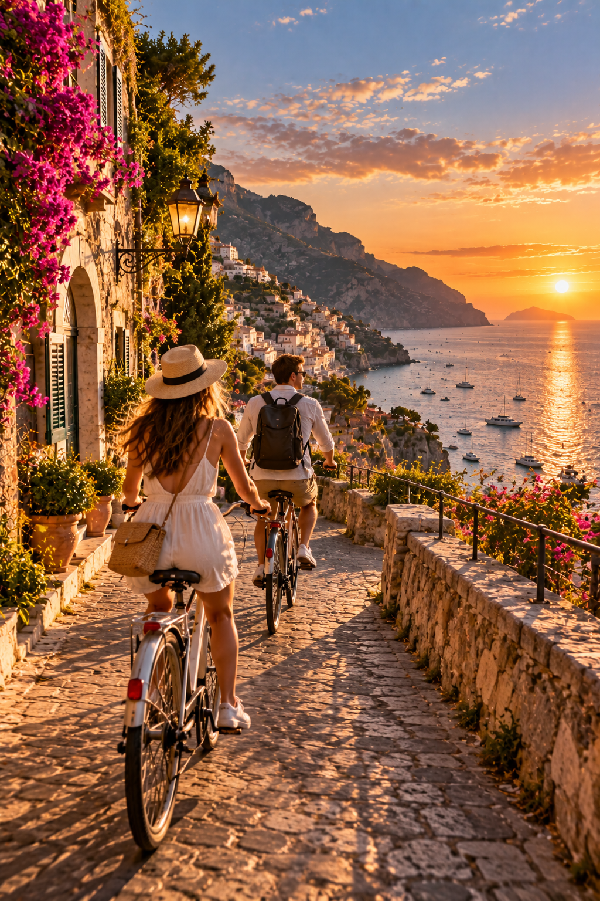

Interval
Capture frames at a regular interval across the video.
VIDEO → PHOTOS
Choose the moment. FrameDropBot turns your video into photos you can keep, share and use.
Start in TelegramFRAME IT YOUR WAY

Capture frames at a regular interval across the video.
Select a section and extract only the frames inside it.
Pick one precise timestamp and save that exact frame.
Extract frames from the whole video and receive them as a ZIP.
HOW IT WORKS
Upload your travel clip directly to the Telegram bot.
Interval, range, exact moment or the entire video.
Receive selected photos or a convenient ZIP archive.
KEEP THE MOMENTS
That one view, street, mountain or sunset does not have to stay buried inside a video.
Try FrameDropBot